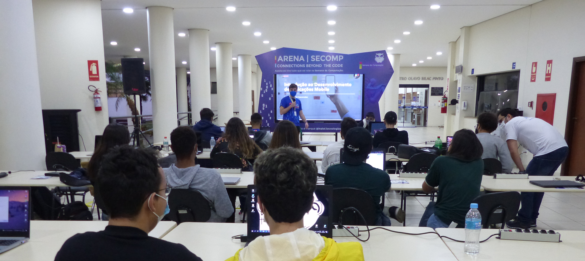
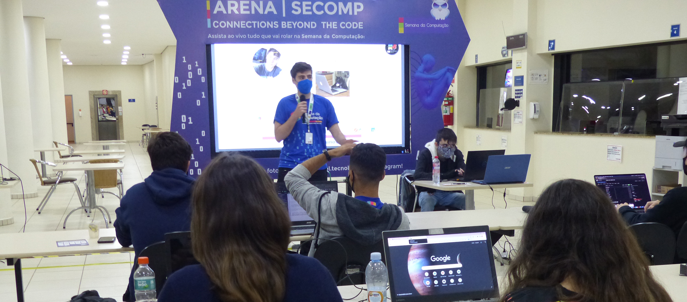

Engenheiro de Software Backend · TypeScript, Node.js & Sistemas Distribuídos
Construo sistemas backend e integrações confiáveis para domínios complexos —
de Open Finance e automação contábil a gerenciamento de dispositivos Apple.
Me importo com fronteiras claras entre serviços, tratamento de falhas e
arquitetura sustentável.
~4 anos construindo sistemas backend em produção, com passagem por
B2ML,
Meinteligente e
Mosyle:
de integrações de Open Finance e pagamentos a automação
contábil e, hoje, uma plataforma de MDM usada por 47 mil+ organizações.
Experiência real trabalhando remoto com times internacionais, incluindo
documentação técnica em inglês. Atualmente em busca de uma vaga remota
(nacional ou internacional).
02 · Projetos
Zoom Storm é um estudo de caso aprofundado de arquitetura, com foco em
sistemas distribuídos, confiabilidade e trade-offs técnicos explícitos.
Plataforma de marketplace construída como um
monorepo de microsserviços em TypeScript, seguindo
Clean Architecture por serviço e um padrão
CQRS + Event-Driven com projeções assíncronas via Kafka.
Storefront do marketplace em Next.js (App Router), SSR + React Query.
apps/bff
BFF em Hono: autenticação OIDC via Keycloak, sessão em Redis, injeta Bearer token nas chamadas ao gateway.
apps/api-gateway
Roteamento interno para cart-service e products-service.
cart-service / products-service
Serviços de domínio (carrinho e catálogo do marketplace) em Hono + Clean Architecture; escrevem em Postgres via Prisma e publicam eventos no Kafka.
*-projection (workers)
cart-projection, products-projection, cart-products-projection consomem eventos do Kafka e materializam os read models em MongoDB.
OutboxRelay
Tabela OutboxEvent gravada na mesma transação da escrita; um worker publica no Kafka e marca publishedAt, garantindo entrega at-least-once em vez de dual-write.
Decisões técnicas & trade-offs
CQRS com bancos separados: escrita em PostgreSQL (Prisma), leitura em MongoDB, sincronizados por eventos Kafka + workers de projeção.
Outbox pattern em vez de dual-write direto: evita inconsistência entre a escrita transacional e a publicação do evento.
Cart-service replica o catálogo de produtos via cart-products-projection em vez de chamar products-service de forma síncrona, evitando acoplamento e latência entre domínios no momento da leitura.
BFF pattern: o navegador nunca fala diretamente com o gateway; o BFF guarda o token em Redis e injeta o header Authorization no servidor.
03 · Experiência
Mosyle Desenvolvedor Backend · Jun 2025 – Presente
Desenvolve funcionalidades backend para uma plataforma Apple MDM usada por mais de 47 mil organizações, trabalhando com PHP legado, fluxos de gerenciamento de dispositivos, diagnósticos, logs, integrações e um assistente interno de suporte com RAG e LLMs.
Meinteligente Desenvolvedor Full Stack · Nov 2023 – Jun 2025
Construiu fluxos de automação contábil e cobrança usando PHP, Laravel, React, Inertia, Node.js, NestJS, Redis, RabbitMQ, PostgreSQL e MySQL. Desenvolveu um pipeline de OCR com Tesseract para extrair e classificar dados de documentos fiscais, reduzindo digitação manual e acelerando a validação operacional.
B2ML Desenvolvedor Full Stack e Mobile · Jul 2022 – Out 2023
Funcionalidades fintech e de Open Finance para clientes da B2ML em TypeScript/Node.js — integração de dados financeiros via Pluggy e Celcoin, fluxos de pagamento com BTG, GalaxPay e Stone e sistemas de conciliação bancária.
Inatel Estagiário em Engenharia de Software · Mai 2021 – Jul 2022
Desenvolveu aplicações internas para apoiar e automatizar processos acadêmicos e administrativos.
Durante a passagem pelo Inatel, atuei como professor assistente lecionando Laboratório de Banco de Dados 2 e Tópicos Especiais 1, além de ministrar os seguintes workshops técnicos:


Introdução ao Desenvolvimento Mobile
Inatel · Secomp · Setembro de 2021
Introdução ao desenvolvimento mobile com Flutter e React Native.
Ensinar exigiu dominar a teoria antes de levá-la para a prática, uma base que carrego até hoje, de bancos de dados NoSQL a sistemas distribuídos em produção. Continuo com interesse genuíno em compartilhar o que sei, seja em mentoria de devs, documentação técnica em inglês para times internacionais ou discutindo decisões de arquitetura abertamente com o time.
06 · Contato
Aberto a oportunidades remotas de backend. Vamos conversar.